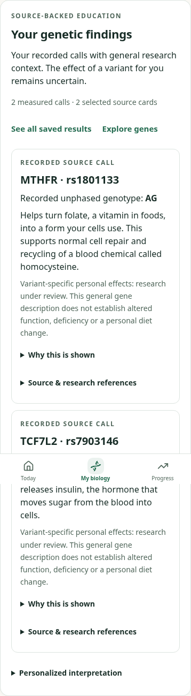
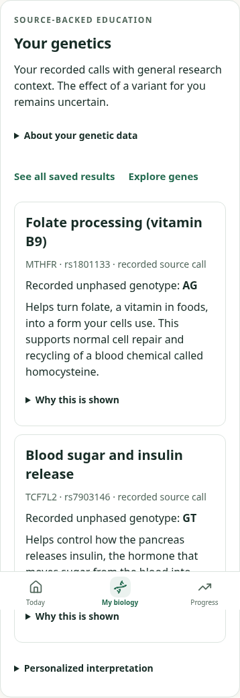

Matched synthetic source calls at390px light. Before:5d8f1a8. Source data and interpretation gates are unchanged; independent Design and physical VoiceOver review remain pending.

1
12Browser results: Synthetic verification receipt. No personal effect claim was enabled by this presentation change.